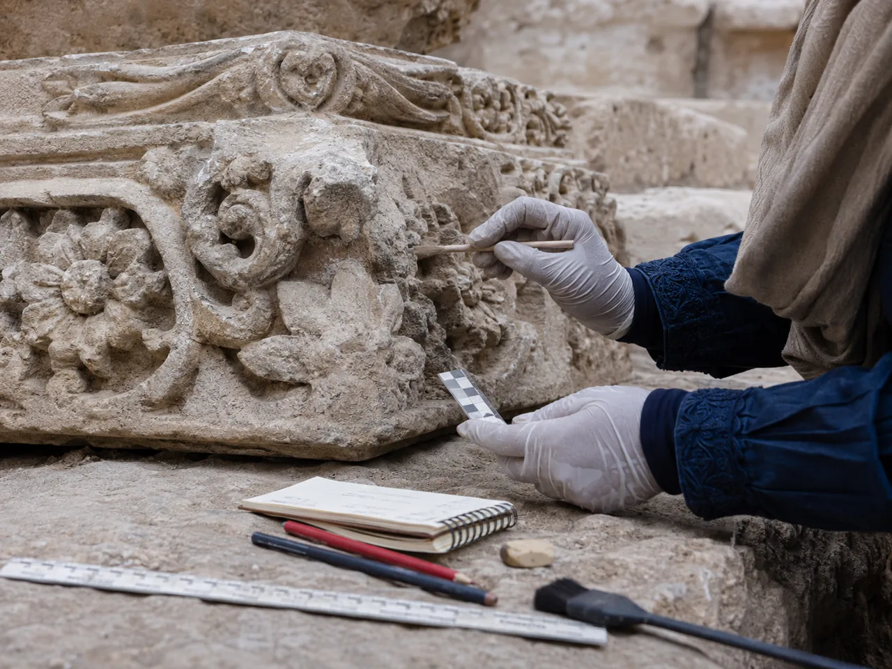

DEMO
3:00 pm
Online (demo)
occurrence
DEMO — Research open studio
A free example activity for the What’s On calendar.
open
project programme
Research, documentation and interpretation supporting the preservation of cultural heritage.
Discuss research or restoration →
Overview
Research and restoration work supports the careful documentation, conservation and interpretation of cultural heritage through planned collaboration and specialist knowledge.
Schedule
3:00 pm
Online (demo)
occurrence
A free example activity for the What’s On calendar.
open